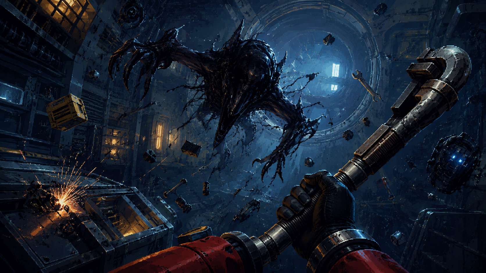
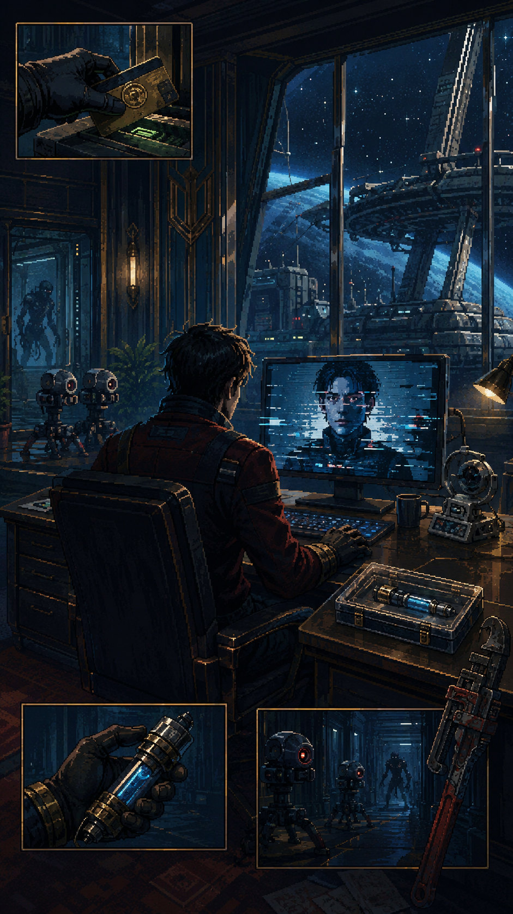
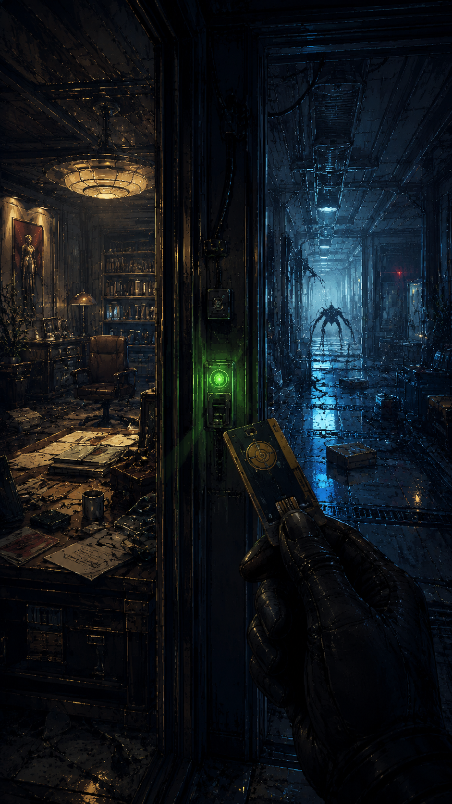

01 / Cover
Session 01 Field Journal
This is the simple play diary version. No final verdict yet. Just what happened, what worked, what felt suspicious, and which scenes deserve an image.

Morgan wakes up into a corporate morning that is too clean to be trusted. That is the useful shape of the first page: normal day, expensive routine, tiny unease, then the first crack.
02 / Fake Morning
The Commute Is Too Clean
The opening works because it lets the player obey a normal routine before revealing that the routine was a set.

First Day on the Job starts as plain roleplay: emails, uniform, hallway, elevator. It is mundane in the right way. The game needs that baseline, because later the whole thing folds back on itself.
The PC setup mostly holds on ultra, but the long Please wait while textures are loading pause goes into the technical caveat column. I also tried forcing a 4K-style oversample, but the image overflowed the screen, so native resolution stays the sane choice.
The hallway detail helps more than a tutorial prompt would. Patricia Varma is fixing a panel; a water-pressure sign explains why she is there. Small maintenance details make the fake world feel staffed before the reveal.
The rooftop ride is showy, but usefully showy. Studio credits become city signage, the helicopter route sells the fantasy, and the whole commute feels like an expensive lie waiting for the illusion to snap.
03 / Test Rooms
The Room Starts Watching Back
The test sequence is not interesting because the tasks are deep. It works because the observers keep reacting like the simplest answers are wrong.
Alex tells Morgan to act naturally. Bellamy keeps the lab calm. Then the rooms ask for very basic things: move boxes, hide, press buttons, answer an inkblot and trolley-style moral prompt.
On paper, none of that is impressive. In practice, the off-screen dissatisfaction is the point. The game is not teaching me a control scheme as much as it is measuring a person and refusing to explain the criteria.
Then a cup becomes a threat, the researcher goes down, and the opening finally names the core horror clearly: ordinary objects can lie. That is the first real review hook.

Current ruling: promising, still unscored. The opening has a strong authored trick, but the real review has not started until Talos I becomes a place I can navigate, test, break, and understand.
04 / Escape
The Apartment Stops Being Real
After the gas, the twist becomes spatial. The hallway is gone, January starts directing, and the apartment has to be treated like a set with breakable edges.
The first useful detail is the body in the hall. The same worker is still there, but now dead, drained, and staged as proof that the clean morning was never a safe place. The game is not just saying the routine was fake; it is showing the aftermath inside the prop.
January calls and points toward the lobby. The more important discovery is physical: the route that used to be a hallway is now only a wall. That makes the reveal stronger than a cutscene, because the old geography has literally stopped existing.
The aquarium and glass exits are the right kind of immersive-sim tutorial. Break the glass, crawl through, and the apartment becomes a puzzle object instead of a room. It is simple, but it teaches the player to question surfaces without putting a big explanation panel in the way.
Outside, the review finally starts watching combat friction. Morgan has a wrench, a medkit, and January's warning: be careful what you pick up. The first Mimics go down fast enough, but the multiplication detail matters more than the damage numbers. If a single escaped creature can split into more threats, containment failure becomes a systems problem, not just a monster problem.

The first caution flag is navigation pressure. A keycard blocks one route, hacking blocks another, and the map is not yet doing much useful work. That can become good station design if the player is meant to read the space, but it can also become dead-end wandering if the game withholds too much at once. This goes into the watch column.
Second caution flag: stamina and repeated small fights are already noticeable. The friction fits the vulnerable opening, but it needs to stay intentional. If every early encounter becomes wrench fatigue before tools open up, the game risks turning paranoia into chores.
05 / Office
The Station Opens Behind The Set
The route stops being only escape survival and becomes the first real systems handoff: keycards, GLOO reach, Neuromods, emails, turrets, office evidence, and the Looking Glass objective.
The first block is still simple friction: a door wants a card, I do not have it, then the simulation lab card turns up. That matters because the game is already teaching a loop: blocked route, search the nearby fiction, return with a permission object.
The Phantom shows up as question marks, which is a good early threat read. It is not fully legible yet, but the shape is enough to tell me this is above the current Mimic tier. The GLOO climb is more important than the fight. Being able to jump back up to higher surfaces, find extra GLOO, and loot around the top of the space is the first clear proof that vertical problem solving is part of the game.
The security booth is still locked behind a password, which is fine if the station expects a return pass. The review note here is not "I was stuck," it is "does the game make backtracking feel like memory, or does it become a list of doors I forgot?" That will need more evidence later.
The first Neuromod lands cleanly. Taking Hacking I feels like the right first explicit build choice because it immediately answers the current pressure: terminals, codes, and blocked access. This is also the point where the page cut becomes natural. We are still in Session 01, but the opening set is over and the station systems are starting to take control.
The Talos I reveal is doing a lot of work. Seeing the ship/station structure from inside the broken route makes the fake apartment feel small in hindsight. Bodies everywhere, random loot, emails, and changed keycodes turn the place into a readable disaster. If those keycodes are randomized per run, that is a strong anti-spoiler design choice because it pushes attention back to the world instead of old memory.
I start moving turrets into a better defensive corner, which is exactly the kind of behavior this game needs to reward. If a room can be prepared before trouble arrives, then the review can judge combat as planning plus improvisation, not just melee stamina management.
Morgan's office is the personal anchor. The workstation video introduces January as a backup made by Morgan, then drops the key Neuromod premise: removing or exporting a Neuromod resets memory back to the point before it was installed. The moment the video is about to explain why, the connection dies. Alex cutting in is a strong trust-layer move because the conflict is no longer just survival; it is control over what Morgan is allowed to know.
The next objective is clean: restore the Looking Glass servers. That is a good endpoint for this page. The first act is not finished because the game said so; it is finished because the review question has changed from "what is real?" to "who controls the evidence?"

06 / Hardware Labs
The Keycard Pays Off
The route out of Morgan's office works because the answer was not a quest-arrow trick. It was a physical keycard left in the fiction, then a harder station wing waiting behind it.
The return route validates the earlier suspicion: the Teleconferencing Keycard really was sitting in Morgan's office keyring. That is a good station-design beat. The game does not need a new tutorial here, just a reason to re-check the space and trust desks, bodies, and office clutter as evidence.
The resource layer stays tight. The fabricator is visible, spare parts start to matter, and the operator dispenser is still dark. That makes the office feel like a promise of future stability rather than a safe room that solves everything now.
Phantoms are the first enemy tier that clearly outgrows the wrench. I can win a fight through luck and commitment, but the damage cost is high enough to make the lesson readable: this is no longer only Mimic cleanup. Combat now needs positioning, tool choice, and enough resources to survive bad reads.
The pistol pickup is the right escalation point. It does not make Morgan powerful; it changes the question from "can I bonk this object?" to "is this worth ammunition?" That is exactly where the review should start tracking combat and resource friction seriously.
Crossing into Hardware Labs feels like the next proof gate. If the wing is stripped, looted, or hostile, the important question is whether that emptiness becomes environmental storytelling and route pressure, or just a space with not enough useful stuff left in it.

07 / Ballistics Lab
Tools Start Answering Back
Hardware Labs turns from route access into a real systems test: GLOO control, wrench timing, Neuromod choices, EMP charges, repair work, recycler charges, Dr. Calvino's location, exterior access, and another operator ambush.
The separated lab area is mostly quiet evidence at first: e-mails, a broken storage chest, a locked office, and Phantom voices somewhere nearby. That is useful pacing. The wing is not only an enemy room; it is a workplace that has already failed.
The first combat adjustment is important. Shooting an operator or enemy from distance with the GLOO Cannon, then closing in for a heavy wrench hit, works much better than plain melee trading. That reframes the stamina complaint. The problem is not only "wrench is tiring"; the better read is that Prey wants tool sequencing before commitment.
The Neuromod state is messy in a productive way. Five Neuromods are available, New Game Plus carryover is not fully clear, and the Psionic/Scientist side is still mostly locked. Impact Calibration, Lab Tech, Hacking, and Engineering all matter because the current run is solving problems through repairs, locked access, weapon pressure, and wrench-forward survival.
The theater beat gives the wing a clean little scene: the Employee Entrance Keycard unlocks, a person runs through, and a Phantom kills him before I can really intervene. It is short, but it makes Phantoms feel like station events rather than enemies waiting in combat arenas.
Maintenance and tool utility keep stacking. A fire pipe gets solved with GLOO, the EMP charge is introduced as an answer to robots, turrets, and electrical entities, the pistol gets a firepower upgrade, and an electrical junction gets repaired. This is the first page where the run starts feeling like a kit rather than a single weapon plus panic.
The Ballistics Lab makes the recycler charge concrete. A hackable safe yields materials, the chamber can be opened, explosive canisters invite experiment setup, and the recycler test implies that Mimic material can become part of the resource economy. That is exactly the kind of systems evidence this review needs to track.
The breach/vacuum warning blocks one route, then the next clean objective appears: find Dr. Calvino through security logs. The security terminal route is harder than the objective text makes it sound, but it works: Calvino gets located, and the station again rewards patient tool-reading instead of only following a marker.
The next transition is clean and tense. I activate the exterior lock from inside, step out toward the outside section, and immediately get hit by another operator problem. That is a good endpoint for this page because the review question has moved again: Talos I is no longer just rooms and keycards, it is now interior systems pushing me into hostile exterior space.
08 / Calvino
The Glass Comes Back Online
The exterior detour pays off: vacuum repair, Calvino's body, useful loot, a material safe, the Q-Beam lab, Josh Dalton's trail, a full Hardware Labs cleanup, and finally the restored Looking Glass servers.
The outside route is not just a detour. It becomes a station-maintenance proof test: repair what can be repaired, loot the exposed spaces, survive the operator pressure, and use the exterior path to make the next objective physically believable instead of abstract.
Calvino's body is the important proof object. The corpse supplies the practical access chain for the workshop route, but it also turns the objective from "fix a server" into "reconstruct what happened to the person who understood the server."
Loot / lore pull: the Calvino evidence is best treated as paraphrase, not a transcript wall. The relevant logs frame him as increasingly unwell, forgetful, and contradictory around his work. Another thread points to a micro-lens/materials errand, so the workshop reads less like a generic lab and more like a specialized Looking Glass repair space whose owner was already slipping.
The safe and exterior loot matter because they turn this into a resource-positive recovery beat, not only a corpse pickup. That is useful pacing after the earlier scarcity pressure: the game lets careful exploration pay back the player with materials and route confidence.
The upstairs beam-gun setup is the first real Q-Beam proof. A Phantom is held under beam pressure, another target is weakened, and the pickup feels earned because the room already demonstrated the tool before handing it over. That is a much better weapon introduction than a glowing gun on a table.
The locked section and Josh Dalton objective stay unresolved for now, but that is not dead progress. It points the review toward GUTS later, so Talos I keeps turning current obstacles into future memory hooks instead of simple "come back with key" chores.
Before leaving, the whole area gets cleaned: the Sputnik-looking probe is activated, repairable systems are fixed, remaining Phantoms and Mimics are cleared, and the labs are looted as far as the current toolset allows. That gives this section a clean end state instead of a messy pause.
Back inside Calvino's workshop, the logs make the deterioration clearer, and the practical payoff finally lands: the Looking Glass servers come back online. The next instruction is clean enough to end the section here: return to Morgan's office and continue the January/Morgan message with the restored servers.
09 / Art Queue
What We Need Next
Missing images stay listed here until exact filenames exist. The latest saved beat is Calvino found, Q-Beam acquired, Hardware Labs cleared, and Looking Glass restored; no new image is required for that note yet.
Drop generated 16:9 PNGs into the Prey image folder, keep the names exact, then rebuild. The page auto-wires matching files into the journal.
prey-page-02-a-rooftop-helicopter.pngprey-page-03-a-mimic-paranoia.pngprey-page-03-b-crew-terminal-trace.pngprey-page-04-a-lobby-wrench-mimic.pngprey-page-05-a-office-looking-glass.pngprey-page-06-a-teleconferencing-keycard.png
npm run build:metronpm run qa:prey-assets
The style rule is now simple: no decorative dashboard, no extra boxes, no fake UI. Write the run like a review diary and drop in a strong image only when the scene needs one.